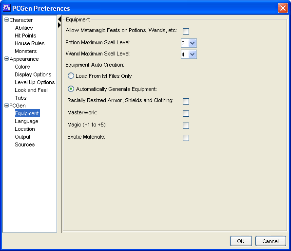

The Equipment options allow the user to setup how custom equipment is handled when it is created.
The Allow Metamagic feats on potions, wands, etc. allows the user to apply metamagic feats to customized equipment. If this option is deselected the ability to add metamagic feats to equipment will not be used.
The Potion Maximum Spell Level is used to select a spell level from 0-9. This defaults to 3 per the Game Masters Rules potion creation rules.
The Wand Maximum Spell Level is used to select a spell level from 0-9. This defaults to 3 per the Game Masters Rules wand creation rules.
The Equipment Auto Creation menu has several options for creating custom magic items at PCGen's startup. ***NOTE*** Some of these options, when selected will cause PCGen to take a considerable amount of time to start while it creates the items specified.